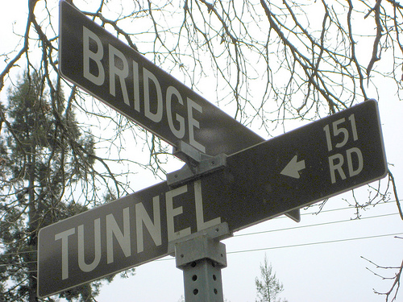

“Protocol” is one of those words that sounds more special than it is. The concept of a computer protocol might sound quite complex, but it’s a rather generic concept that is something like a language, an expectation, and a social norm.
The way a particular protocol works might be quite complicated, but I just want to explain the generic concept of a protocol. I’ll explain this through two example protocols.
The street sign protocol

First, I’ll document a protocol that we might not usually think of a protocol. Let’s call it the Street Sign Protocol (SSP).
To keep things simple, I’ll actually document a simple version of the Street Sign Protocol. Let’s call it the Simple Street Sign Protocol (SSSP).
Specification
SSSP is a way of exchanging the names of streets. It involves street signs mounted on poles near the corners of four-way intersections. Let’s define these terms.
- A street is a paved public thoroughfare in a built environment. (This definition is taken from Wikipedia.)
- A four-way intersection is a place where two streets cross. Its shape is approximately a rectangle, with one side having the width of one street and the other side having the width of the other street.
- Being rectangular, a four-way intersection has four corners at the usual places.
- A pole is a long cylinder sticking out of the ground.
- A street sign is a flat rectangular thing that has text on both faces. The sign is oriented such that the text reads left-to-right.
Next, let’s discuss what is expected of all of the.
Each four-way intersection has four corners, and each pole is associated with a corner of an intersection. Each corner must have zero or one poles, and at least one of the corners of a four-way intersection must have a pole; thus, an intersection must have between one and four poles.
Poles must be mounted within about ten feet of a corner of the intersection but not on the paved area of the street or the intersection. (It is okay for them to be mounted on the sidewalk.) It must stick straight out of the ground; the long axis of the cylinder must be approximately in line with the direction of gravity.
Each street sign displays the name of one street. The street sign must include the name of the street in very large text. This name must be written on both faces of the sign and must be especially easy to see, even at night.
Street signs are mounted on poles, each pole having exactly two street signs. The street signs must be aligned in a particular way. One of the faces must be just-barely-touching (tangent) the pole. The sign must also line up with its corresponding street; that is, the wide axis of the rectangular sign must run parallel the corresponding street.
Each pole must contain two street signs, each one corresponding to a different one of the two streets at the four-way intersection.
Implementing a SSSP writer
Here is one possible procedure for encoding street names in SSSP. This procedure expects a four-way intersection and the names of the two streets as input. It outputs SSSP (two street signs mounted to a pole near the intersection).
- Determine which corner(s) of the intersections the street signs should be mounted on. You might consider the locations of buildings, the presence of sidewalks, the traffic patterns and the presence of visual obstacles like trees.
- Print the signs with the street names.
- Cast a pole.
- Put a pole and street signs on a truck.
- Drive the truck to the intersection, and park nearby.
- Carry the materials and some tools to the intersection.
- Stick the pole in the ground near the chosen corner. I imagine that this involves putting up caution tape, digging a hole, securing the pole, pouring some concrete and covering it back up, but I don’t really know. If this were software, I’d try to use separate pole-installation library so I don’t have to implement the pole-installation procedure myself.
- Mount the street signs to the pole. Position them about ten feet above the ground, with one on top of the other and with the centers of the signs touching the pole, and otherwise in the appropriate orientations specified by the protocol. Secure them with a sign bracket.
- Drive the truck back to wherever you got it from.
Implementing a SSSP reader
Here is a procedure for decoding SSSP. It has the opposite inputs and outputs as the SSSP writer.
- Look for poles with street signs at the four corners of the four-way intersection.
- Focus on the first valid pole that you see; ignore any others.
- Do the following for each of the two street signs.
- Read the large text on the sign.
- Associate this large text with the street that the sign lines up with.
Hypertext Transfer Protocol
Now let’s talk about something that people actually call a protocol. Here’s a simplified version of the Hypertext Transfer Protocol (HTTP)
Highly simplified specification
HTTP is a way of exchanging commands between a web browser and a web server. It is represented as a very long series of words, punctuation and spaces.
Some messages have a body. This is an embedded series of words, punctuation and spaces that can be written in any format you want. (You could use this to write another protocol on top of HTTP.)
Each message may have a bunch of headers. Each header has a name and a value. There are a bunch of headers that provide some information about the body (like its size or format), and there are a bunch of headers that provide information about the system that is sending the message. And there are others, like the date of the message.
Each message is either a request or a response. By being a request, a message indicates that it came from a web browser and is being sent to a web server. By being a response, a message indicates that it came from a web server and is being sent to a web browser. Each response sent from a particular server to a particular browser must be initiated by a request sent from the particular browser to particular server.
Every response has a body (explained above) and a status code. The status code
is a number that explains whether the request succeeded and any quirks about its
success or failure. For example, status code 200 means that the request worked
as expected, and status code 403 means that the web browser is not allowed to
run the command that it requested.
Each request must have a method. There are a bunch of methods, and you can think of them as different commands. Here are a few of them.
POSTis the method that asks the server to save a new document. It contains a body.PUTis the method that asks the server to edit an existing document. It contains a body.GETis the method that asks the server to send an existing document in the body of the response (and not to alter it). The request does not contain a body.HEADis the method that asks the server to do everything that it would do in for an equivalentGETrequest except for sending the body. Like theGETrequest, theHEADrequest contains no body.
Receiving and reading and writing and sending
A bunch of things in your web browser might initate a request. For example, opening a web page makes one request, and loading an image on the web page makes another request.
The web server receives the request, checks that it is valid, and breaks it into the component method, headers, and body. Then the web server asks something else to decide what to do. After doing everything, this other thing decides what the outcome of the command was and tells the web server. The web server composes an HTTP response and sends that back to the browser.
The browser breaks that into its various parts and accordingly displays a web page, shows an image or does whatever else was specified.
Review
A particular protocol might get quite complicated, but the concept of a protocol is quite general. A computer protocol is just a way that we expect things to work, and we agree on a computer protocol because that makes it easier for us to make computers communicate. “Protocol” means the same thing for computers as it does for people.